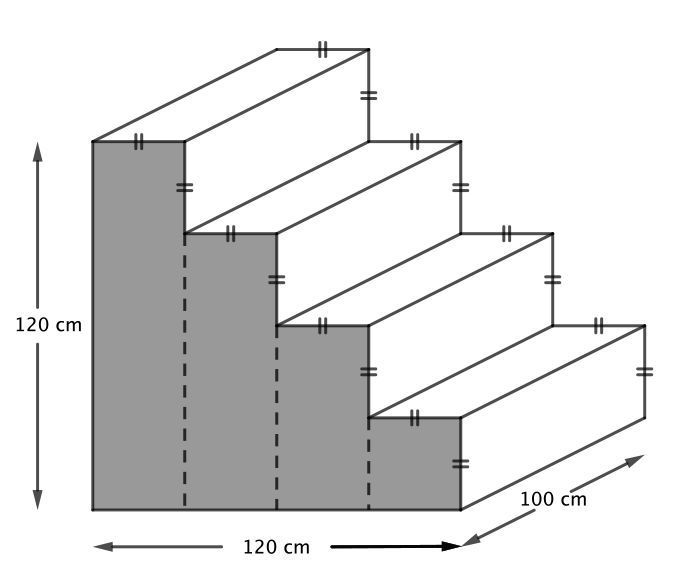

Problem of the Week
Problem C and Solution
New Steps
Problem
The POTW clubhouse needs to replace their front steps. A suggestion for the steps is shown below. The steps are of equal depth and equal height. The steps are 120 cm high, 120 cm from front to back and 100 cm wide.
The stairs are to be painted gold and the two sides are to be painted black. One of the two sides that is to be painted black is shaded in the diagram. The back and bottom of the structure will not be seen and will not be painted.
Determine the total area to be painted gold and the total area to be painted black.
Solution
In order to solve both parts of the problem, the depth and height of each individual step must be calculated. The entire structure is 120 cm from front to back and four steps cover the entire depth. Therefore, each step is \(120 \mbox{ cm} \div 4 = 30\) cm wide and high.
The area to paint gold is made up of 8 identical rectangles, each 30 cm wide and 100 cm long. Using the formula \(\text{area}=\text{length} \times \text{width}\), the area of one rectangle is \(30 \times 100=3000 \mbox{ cm}^2\). The area of all surfaces to be painted gold is \(8 \times 3000=24\,000 \mbox{ cm}^2\).
There are many different ways to find the area of the sides of the stairs. One solution would be to break the figure into four equal width rectangles, one four steps high, one three steps high, one two steps high and the final rectangle one step high.
The area of one side is
\(30 \times (4 \times 30) + 30 \times (3 \times 30)+30 \times (2 \times 30)+30 \times (1 \times 30)\)
\(=30 \times 120 + 30 \times 90 + 30 \times 60 + 30 \times 30=3600+2700+1800 +900\)
= \(9000 \mbox{ cm}^2\).

The total area of the two sides to be painted black is \(2 \times 9000 = 18\,000\ \mbox{cm}^2\)
A second method to calculate the area of one side involves breaking the figure into triangles. Draw a diagonal from the top left corner to the bottom right corner. This diagonal line would hit the bottom corner of each step as shown in the diagram. The larger triangle has a base and height of 120 cm. Each of the four smaller triangles has a base and a height of 30 cm, the width and height of each step.
Using the formula \(\text{area} =\text{base} \times \text{height} \div 2\), the area of one side is
\(120 \times 120 \div 2+4 \times (30 \times 30 \div 2)=7200 + 1800=9000\ \mbox{cm}^2\).
The total area of the two sides to be painted black is \(2 \times 9000 = 18\,000\ \mbox{cm}^2\).
Therefore, the total area to paint gold is \(24\, 000 \mbox{ cm}^{\bf 2}\) and the total area to paint black is \(18\,000 \mbox{ cm}^{\bf 2}.\)